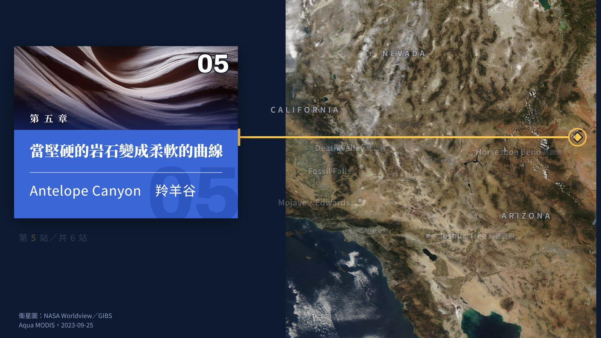

開發誌 · 2026-11-21 · 系列（十三）章節地圖
章節地圖：讓觀眾隨時知道我們在哪裡
《大山大水之旅》是一個公路旅行的系列：加州海岸、內陸的火山與冰河谷、荒漠，再往北到奧勒岡與華盛頓。 旅行節目有一個講故事的節目沒有的難處——觀眾要隨時知道我們現在在哪裡。
每一章從地圖開始
海岸那一集，每一章開頭是一張地圖：左邊一張藍色的章節卡，右邊是衛星圖、路線、每一站的英文與中文地名， 左下角寫著「由北往南 第 6 站／共 9 站」。做下一集時，頻道主特別指著那一幀說：
我還是希望保持每一個章節是以地圖上的地點來標記來啟動，讓人們知道我們現在在講什麼區域、什麼地點。
從那之後，地圖成了旅行集的脊椎。內陸那一集的路線不是由北往南，而是從火山一路往南、再轉到東側的公路， 所以「第幾站」的寫法跟著實際的順序走，不硬套上一集的說法。
跟著幾輪意見長大
- 左邊的卡片放一張「那個地方最有名的樣子」。頻道主在頻道守則裡寫：右邊的地圖已經標出地點和名字，左邊那一塊， 應該放一張固定的、那個區域最有名的畫面，每一站都一樣。地圖告訴你在哪裡，照片告訴你那裡長什麼樣。來源照樣是頻道主自己的照片優先，不用生成圖。
- 手機看得清楚。荒漠那一集，他在一張截圖上親手畫了修改：章號移到照片右上角；副標放大，「from mobile user」； 地圖上重複的章節標籤整個劃掉，改成一條黃線從卡片連到那一站的菱形記號。他寫：「this change apply to all Chapter starting slide.」
- 地名先英文、再中文。每一站都標英文名稱與華人的叫法，跟旁白的規則一致。

地圖是一張會推拉的圖解
地圖本身是用網頁畫的圖解，跟第四集為時間線節目做的圖解引擎是同一套（見（九））： 整條路線是一張圖，每一章只是換一個「看的位置」——先看全圖，再把這一站跟卡片點亮，其他站變暗。 衛星圖用 NASA 的公有領域影像，挑雲少的日期；路線只是示意，不是導航。
到了荒漠那一集換成動態版型（見（八）），每一章開頭的總覽裡，地圖就放在右邊那一格， 等總覽縮到一邊，畫面才交給實拍。這也是頻道主要求副標放大的原因之一：地圖縮在框裡，字更小了。原則不變：觀眾每進一章，都先知道自己在哪裡。
系列的收尾
系列還有一句收尾，是頻道主自己挑的：每一集的最後一章、在「感謝你與我同行」之前，旁白念出、畫面上也寫著—— 「看見風景，也看懂風景。」說明欄的最後一行也是它。十個字，講的是這個系列想做的事：不只是到此一遊，而是知道自己看到了什麼。
本頻道由 AI 協助製作與記錄，選題、判斷與觀點出自頻道主本人。文中不含任何憑證與金鑰。